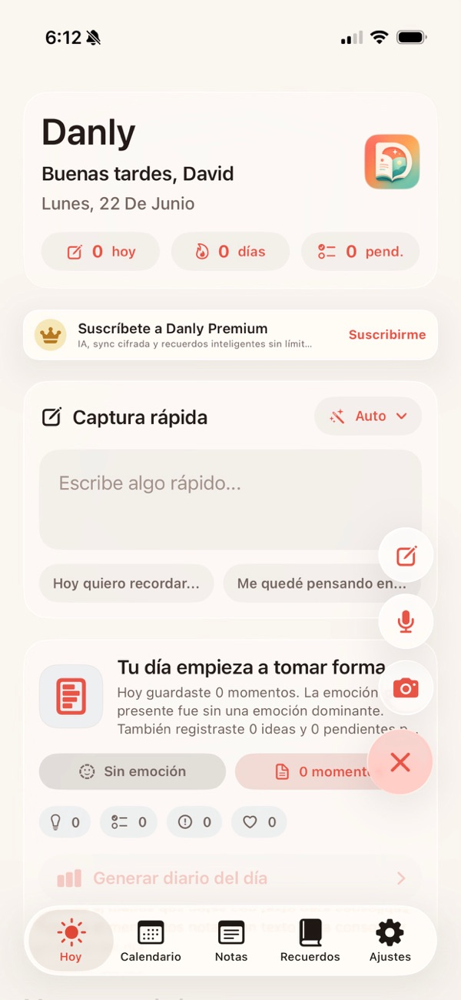
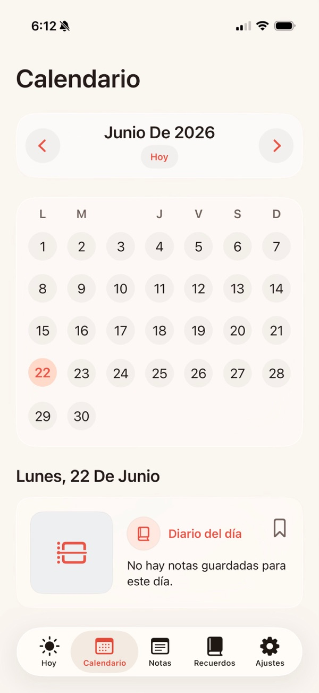
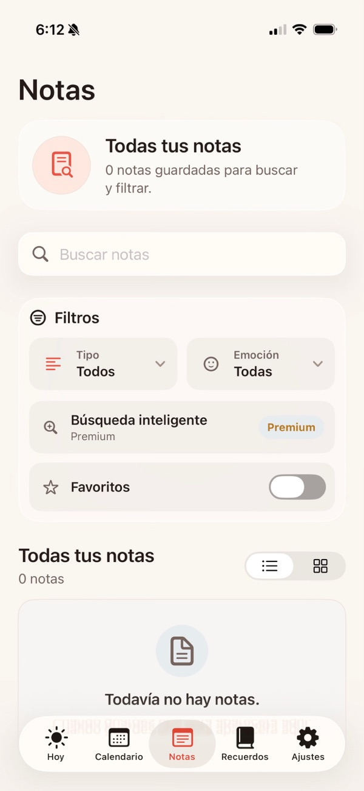
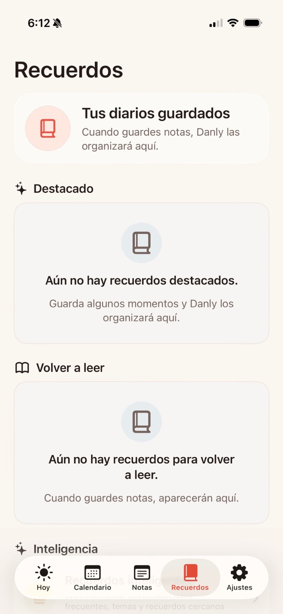

Un diario privado inteligente para guardar notas, fotos y voz, organizar recuerdos y cerrar el día con resúmenes generados por IA opcional.




Guarda notas rápidas, listas, ideas, pendientes, fotos y audios desde una interfaz enfocada en registrar antes de olvidar.
Convierte notas habladas en texto buscable usando reconocimiento de voz, manteniendo también el audio original.
Cuando el usuario lo autoriza, Gemini consolida notas y transcripciones en un diario claro del día y detecta estados de ánimo.
Permite etiquetas, personas con @nombre, favoritos, emociones, calendario, búsqueda y recuerdos destacados.
Soporta modo local, bloqueo con Face ID o código, cifrado de datos sincronizados y frase de recuperación para abrir recuerdos en otros dispositivos.
El usuario conserva control sobre sus recuerdos con exportación estructurada y opciones para borrar, restaurar o vaciar la papelera.
Danly está publicado como una app iOS para escribir, grabar y preservar recuerdos privados con ayuda de IA opcional.